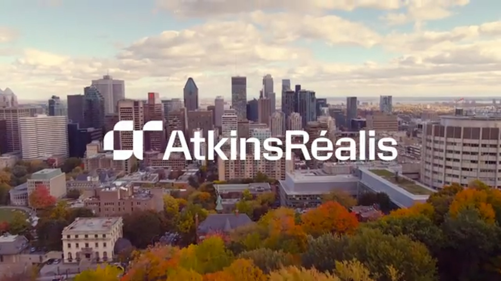
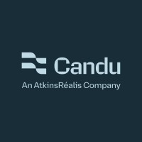
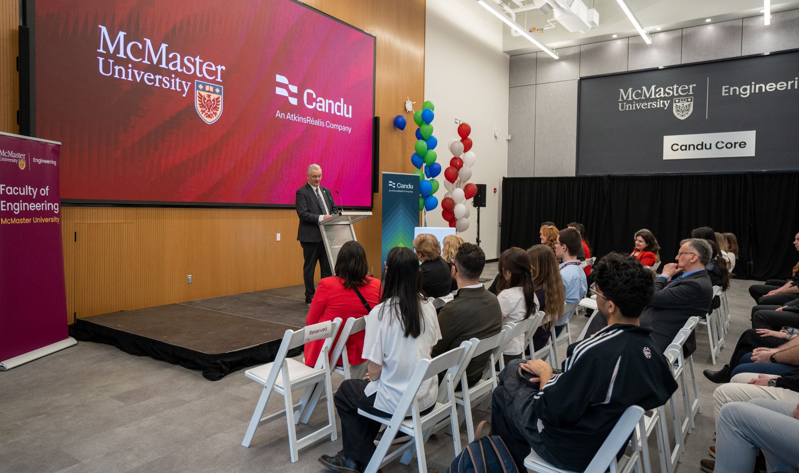
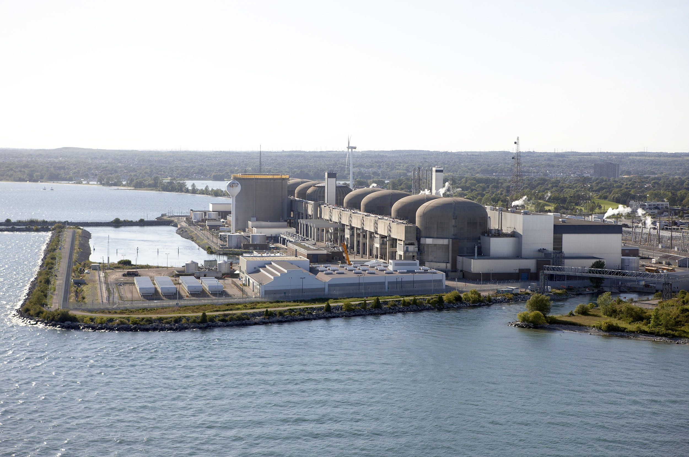
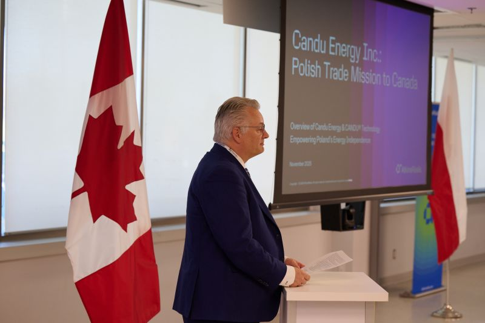

Hi there! My name is Muhammad Shaikh. During the Winter semester of 2026, I worked as a Student Project Coordinator at AtkinsRéalis Within the Candu Energy Inc. division, where I supported the Project Delivery team through technical and organizational projects. My work focused on developing Power BI dashboards, building internal database tools using Microsoft Access, VBA, and SQL, and leveraging Excel to organize and analyze project data for managers and directors. I also participated in STEM outreach initiatives by visiting schools and presenting information about Candu Energy and the careers in the energy sector. This experience helped me strengthen both my technical and professional skills, particularly in data analysis, communication, and project coordination.

AtkinsRéalis is a global engineering and project management company that delivers solutions across industries including nuclear energy, infrastructure, transportation, and engineering services. I worked within the Candu Energy division, which is responsible for maintaining, building, and refurbishing CANDU nuclear reactors that provide a large portion of Ontario’s electricity. The division supports major nuclear projects across Canada and internationally, helping deliver reliable and clean energy through advanced reactor technology and engineering solutions.

Learning Goal 1:
Actively collaborate with HR and project teams to align data outputs with their needs
Throughout my work term, I actively collaborated with HR and project teams to ensure that the dashboards and reports I developed aligned with their operational needs. I regularly attended check-ins with stakeholders, gathered feedback on Power BI dashboards and Excel reports, and iteratively updated my work based on their input. This process helped ensure that the final outputs were practical, relevant, and easy to use for decision-making. I believe I was successful in this goal, as I received positive feedback regarding my responsiveness and ability to incorporate suggestions effectively, which also helped strengthen my working relationships across teams.
Learning Goal 2:
Critical & Creative Thinking – Problem Solving
During my work term, I independently identified and resolved several HR data and reporting challenges using Excel and Power BI. One key example involved analyzing departmental usage patterns by visualizing employee data to better understand organizational needs. I also worked with Excel to clean, filter, and structure team data, which helped clarify reporting hierarchies and improve data consistency. These solutions reduced data inconsistencies and improved overall visibility, supporting more informed decision-making across HR and project teams.
Learning Goal 3:
Professional & Ethical Behaviour – Leadership
I demonstrated leadership by supporting new interns and team members as they onboarded into the organization. I acted as a resource for questions related to HR data workflows, Excel templates, and Power BI dashboards, helping others become productive more quickly. I also contributed to the monthly Power BI users group, where I shared guidance on report creation, data extraction, and dashboard publishing. In addition, I supported the co-op team by helping new interns understand tools and workflows, contributing to a smoother onboarding experience and stronger team collaboration.
Learning Goal 4:
Communicating – Oral Communication
Over the course of my work term, I improved my oral communication skills when interacting with managers, directors, and senior leaders. I learned to prepare concise talking points before meetings and practiced explaining technical insights from Power BI and Excel in clear, non-technical language. As a result, I became more confident presenting updates and responding to questions in real time. Feedback from my supervisor indicated that I communicated my ideas clearly and professionally, reflecting noticeable improvement in clarity and delivery.
Learning Goal 5:
Critical & Creative Thinking – Depth & Breadth of Understanding
I developed strong adaptability by learning and applying new technologies throughout my work term, including Power BI, Excel, internal HR systems, SQL Server, and Microsoft Access. I used SQL Server to extract and work with datasets, and leveraged Access to organize, partition, and filter large volumes of data. By applying these tools directly to HR reporting challenges, I improved efficiency in my workflows and strengthened my confidence in learning and using unfamiliar technologies. This experience enhanced my ability to quickly adapt to new systems and apply them effectively in a professional environment.

In my role as a Student Project Coordinator at Candu Energy, I worked within the project delivery team supporting internal operations, reporting, and coordination across multiple ongoing nuclear projects. As the company continues to grow rapidly, many teams were adapting to new workflows, policies, and reporting requirements, creating opportunities to improve internal processes and solve operational challenges through technology. My work focused on building tools and systems that helped teams manage information more efficiently and maintain smooth project execution.
I worked extensively with Power BI, Microsoft Excel, VBA, Microsoft Access, SQL, and SharePoint to develop internal dashboards, reporting tools, and database solutions used by managers and directors. These tools helped streamline project tracking, organize large amounts of operational data, and support decision-making across teams. I also performed data entry, fulfilled ad hoc reporting requests, and assisted in maintaining accurate and accessible project information. In addition, I developed SharePoint pages and internal resources that were later featured on the corporate website, helping improve communication and accessibility for employees across the organization.
Beyond technical responsibilities, I also participated in STEM outreach initiatives where I represented the company at schools and community events, speaking to students about careers in engineering, technology, and the role of nuclear energy in Ontario. Through this experience, I strengthened my technical, communication, and organizational skills while learning how large engineering organizations coordinate projects and adapt to evolving operational needs.

In conclusion, my experience at Candu Energy helped me grow not only as a technical professional, but also as a leader, learner, and problem solver. Through opportunities to build dashboard reports and internal tools, present information to managers, directors, and vice presidents, and support teams across major nuclear projects, I developed stronger technical, communication, and analytical skills. Participating in STEM outreach initiatives also allowed me to improve my confidence and leadership by teaching students about engineering, technology, and careers in the energy sector. Additionally, learning more about nuclear energy and its importance in powering modern technologies such as computers, data centers, and AI systems, gave me a greater appreciation for the critical role the energy industry plays in supporting innovation and everyday life.

I would like to acknowledge the Director of Project Delivery, the Vice President of Project Delivery, the Project Resources Manager, and the Project Resources Director at Candu Energy for their guidance, leadership, and support throughout my work term. I am especially grateful to the Director of Project Delivery for providing me with the opportunity to contribute in a meaningful way, an experience that significantly shaped my work ethic, problem-solving approach, and personal growth. Their mentorship and encouragement made a lasting impact on my development both professionally and personally.